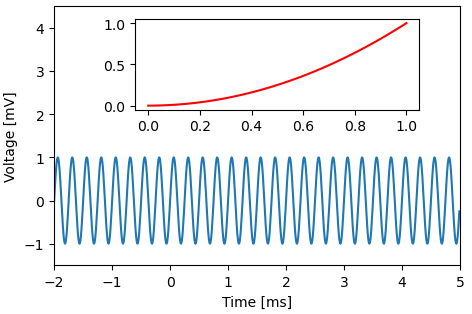
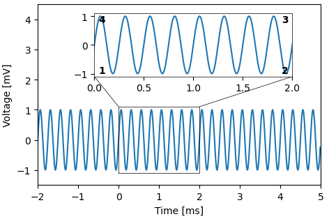

Insets module
Construct new axes to be used as inset plots.
import numpy as np
import matplotlib.pyplot as plt
import plottools.insets
fig, ax = plt.subplots()
x = np.arange(-2.0, 5.0, 0.01)
y = np.sin(2.0*np.pi*4.0*x)
ax.plot(x, y)
ax.set_xlim(-2.0, 5.0)
ax.set_xlabel('Time [ms]')
ax.set_ylim(-1.5, 4.5)
ax.set_ylabel('Voltage [mV]')
Inset
inset() creates new axes at the specified relative axes coordinates
(x0, y0, x1, y1).

axi = ax.inset((0.2, 0.6, 0.9, 0.95))
x = np.linspace(0, 1, 50)
axi.plot(x, x**2, 'r')
Zoomed inset
zoomed_inset() creates new axes at the specified relative axes coordinates (first argument: x0, y0, x1, y1), draws a box around the original data (second argument, in data coordinates: x0, y0, x1, y1) and sets the limits of the inset axes accordingly.
The third argument specifies lines to be drawn from the data box to the inset. Each tuple specifies a corner on the data box that is to be connected with another corner of the inset.

axi = ax.zoomed_inset([0.2, 0.6, 0.9, 0.95], [0.0, -1.1, 2.0, 1.1],
[(4, 1), (3, 2)], lw=0.5)
axi.plot(x, y)